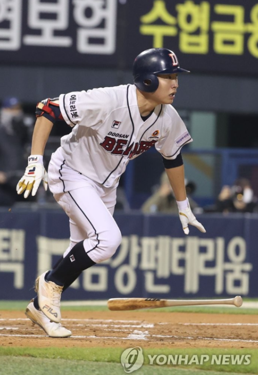

Preseason Power Rankings!!!
Author: Andrew Jang
Published on: March 14th, 2024
Now, for what you've all been waiting for!
2024 Preseason Power Rankigns
10. Kiwoom Heroes
I know, I know, how could I do my own team like this? But it doesn’t look bright for my heroes in 2024. After an extremely lackluster season following their Korean Series appearance, Kiwoom lost both their superstars due to MLB posting and military service. Kiwoom looks to rely on their star 2B Kim Hye-Sung, and the short successful stretches they saw toward the end of last season from OF Ronnie Dawson and OF Lee Ju-Hyeong. With the addition of veteran Choi Joo-Hwan, the offense has the potential to fuel them to a playoff spot, but their lack of reliable pitching help holds them back for me.
9. Lotte Giants
With their lack of substantial moves, they don’t look to improve that much from last year’s 8th-place finish. Their hot bats began to peeter out and their lack of a reliable set of bullpen arms brought them back down to earth in the 2nd half of the season. Even with Lotte’s big 3 of Aaron Wilkerson, Na Gyun-An, and Park Se-Woong, their lack of any reliable bats and the loss of Han Dong-Hui to military service make them an unlikely playoff team.
8. Doosan Bears
This ranking sees Doosan drop a huge 3 spots from their 5th place finish in 2023. For me, this ranking comes down to regression. Outstanding seasons from CF Jung Soo-Bin and SP Gwak Been fueled Doosan’s push toward postseason glory. But that run came to an abrupt end when they were stopped by NC in the first wildcard game. In my opinion, I see a lot of their aging core taking steps back, but I hope this opinion is wrong as I can see young prospects such as Kim Dong-Ju and Choi Seung-Yong taking a step forward.
7. Samsung Lions
This ranking is another one I hope I’m wrong on. Samsung’s young core displays a lot of raw talent but needs a couple more years to be experienced enough to win it all in my eyes. However, if breakout players from last season, such as Lee Jae-Hyun and Kim Sung-Yoon continue playing well in tandem with their stars Won Tae-In, Koo Ja-Wook, and Kang Min-Ho I could easily see this young core breaking all expectations and finishing as high as 3rd or 4th. Their FA adds of Kim Jae-Yoon and Lim Chang-Min have bolstered their previously weak bullpen, and while it could still use some work Samsung has patched many of their weaknesses and are just waiting for their players to develop.
6. NC Dinos
The NC Dinos are a difficult team to place. Their lineup seems too good to drop them too low. With the likes of bonafide stars Son Ah-Seop, Park Min-Woo, and Park Kun-Woo, as well as key contributors Seo Ho-Chul and slugger Kwon Hee-Dong, their offense has the firepower required to make a deep run. However, key losses including Jason Martin and key SPs Erick Fedde and southpaw Koo Chang-Mo, hinder their chances this season. They’ll need to rely on new arms this season to back their offense.
5. KIA Tigers
KIA went under the radar last year, finishing in 6th place with an outstanding showing from their offense. KIA’s offense finished 2nd in Batting Average, Homeruns, RBIs, SLG, and OPS. With the likes of Choi Hyung-Woo, Na Sung-Bum, Kim Sun-Bin, Park Chan-Ho, and Socrates Brito their lineup already boasts enough hitters to make pitchers shake in fear. But KIA also boasts depth pieces such as Choi Won-Joon, Lee Chang-Jin, Lee Woo-Sung, and Go Jong-Wook. Not to mention their up-and-coming star 3B Kim Do-Young. KIA’s offense is definitely not lacking and their pitching isn’t either. The starting rotation boasts two strong southpaws Yang Hyeon-Jong and Yoom Young-Cheol as well as an extremely strong bullpen that ranked 2nd in bullpen ERA. Unfortunately, injuries prevented them from making a deep run last year, but that could easily change this year.
4. Hanwha Eagles
Definitely my most controversial pick, but I hope I end up being right. Hanwha has been stuck at the bottom of the league for the last 5 years, but I predict their comeback to come this year in triumphant fashion. Boasting one of their strongest rosters in years, their offense has a balanced mix of bats to carry them into this spot, with the likes of sluggers Chae Eun-Sung and Roh Shi-Hwan as well as small ball players Jung Eun-Won and Ahn Chi-Hong. However, their real strength comes from their pitching. With former ROY and MVP winner Ryu Hyun-Jin returning to spearhead a rotation with Moon Dong-Ju, Ricardo Sánchez, and Félix Peña, as well as a bullpen with solid arms such as Park Sang-Won, rookie sensation Kim Seo-Hyun, and Lee Tae-Yang, Hanwha’s pitching jumps off the page. If everything falls into place, this 4th place prediction doesn’t seem too unreasonable.
3. SSG Landers

SSG has maintained a strong chokehold in the KBO over the last couple of years. Their strong core of homegrown talent has marked them as a mainstay in the KBO over the past decade. Generational talents such as 3B Choi Jung and SP Kim Kwang-Hyun will always make sure they stay relevant. Young stars such as OF Choi Ji-Hoon and SS Park Sung Han have marked their territories as mainstays for the next decade. For a team such as SSG, although they may not make many changes, they continue to be a strong contender which makes me comfortable putting them at 3.
2. KT Wiz
At first, I was hesitant to put KT this high. Last year seemed like a surprise upset to grab 2nd place at the end and the loss of Kim Jae-Yoon this year didn’t help. However, KT on paper is still as, and if not stronger this year. Headlined by the news of KBO legend Mel Rojas Jr. returning, this offense looks like it could be as lethal as their championship year. If everyone stays healthy, KT’s offense could easily be top 3 in the KBO. And as always, KT’s pitching is their main strength. Ace Go Young-Pyo, William Cuevas, and Eom Sang-Baek highlight the rotation with an extremely strong bullpen consisting of Park Young-Hyun and Ju Kwon amongst others.
1. LG Twins
A no-doubt pick for my top spot. The reigning champions look poised to repeat as they possess one of, if not the best rotations and lineups in the league. Throughout LG’s whole lineup, there are no easy outs. Whether it’s Austin Dean, Hong Chang-Ki, Moon Bo-Kyung, or Shim Min-Jae, LG is one of the toughest offenses to face in the league. On top of that, their consistent ability to build a strong rotation and bullpen makes them a very consistent team. The resurgence of Lim Chan-Gyu as well as Casey Kelly and even Choi Won-Tae, who had an off year, marks a solid rotation. On top of that LG’s bullpen is always one of the best in the league. Even with the loss of Go Woo-Suk, they still boast Jung Woo-Young and Park Myeong-Geun. They are the easy picks to repeat.
Stay tuned to our website for more KBO updates and news!